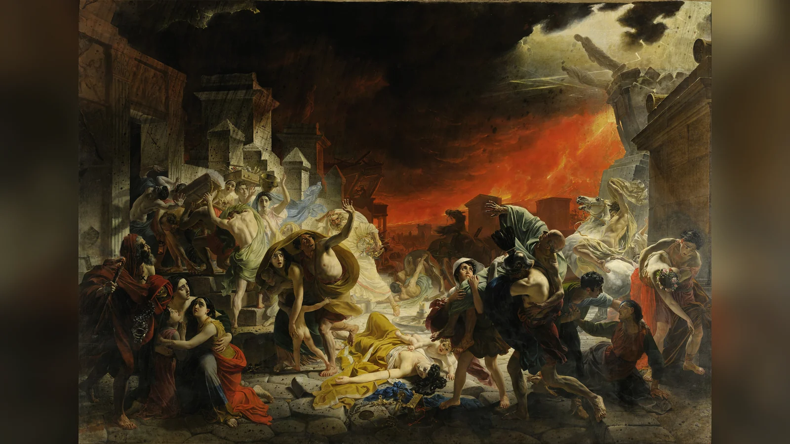
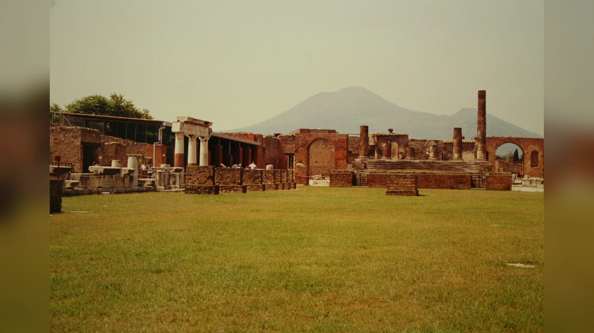
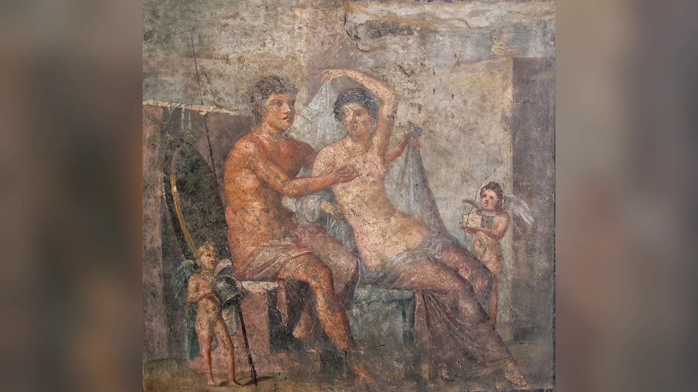
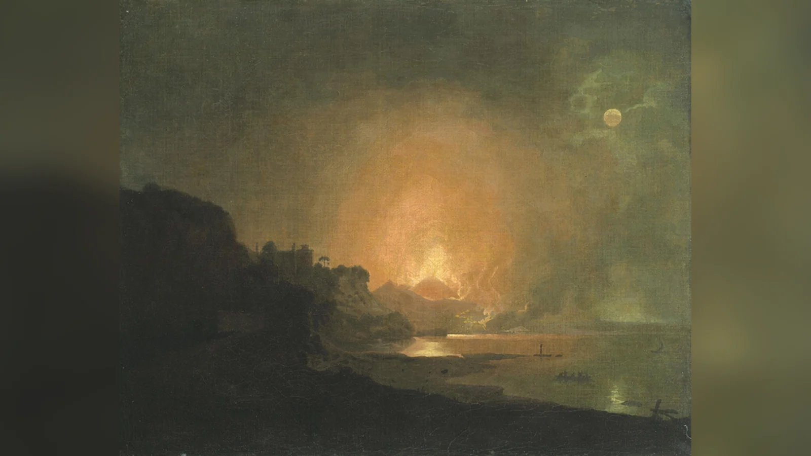
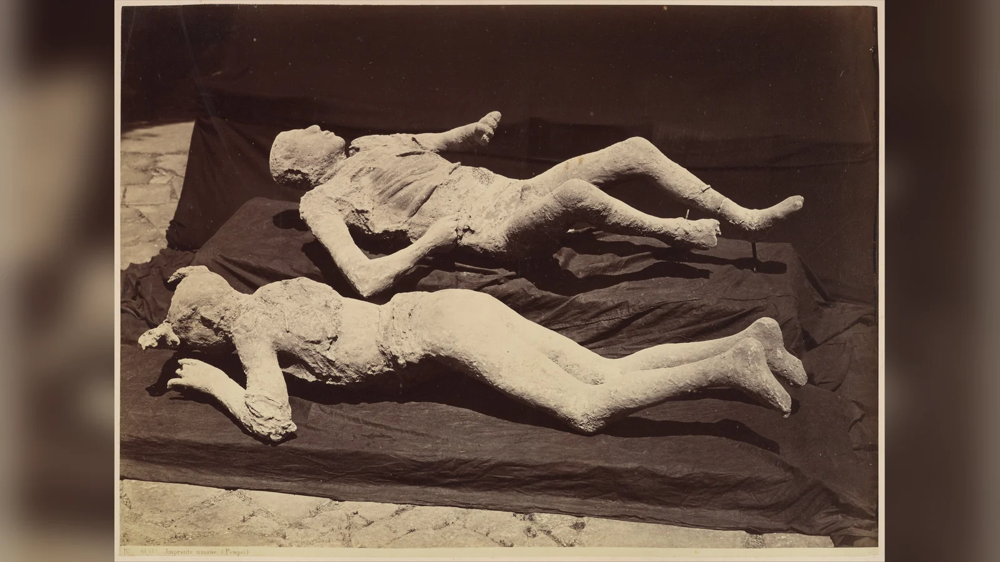
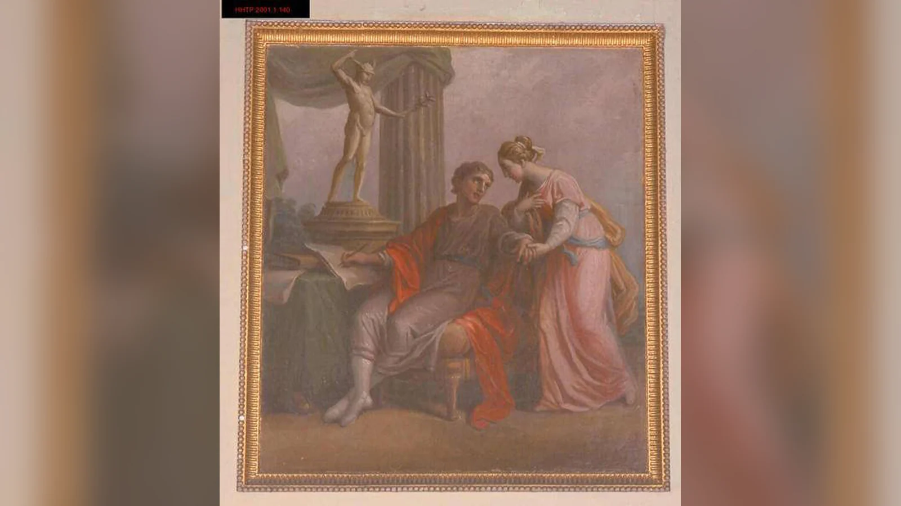
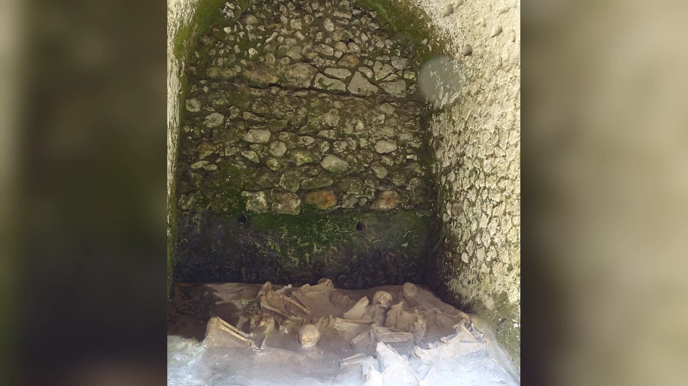
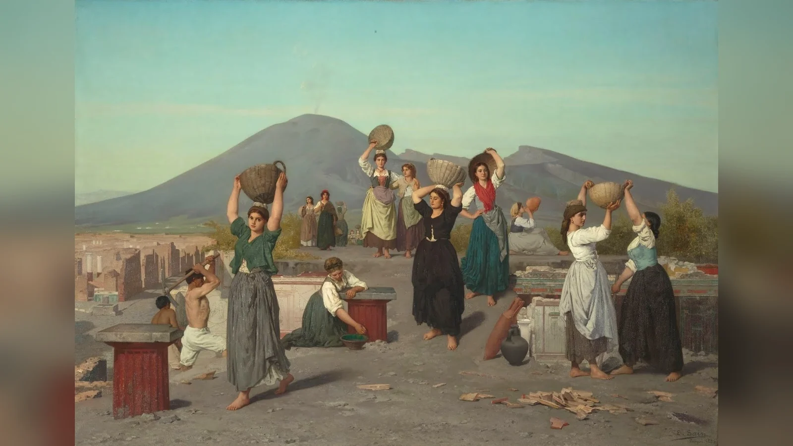
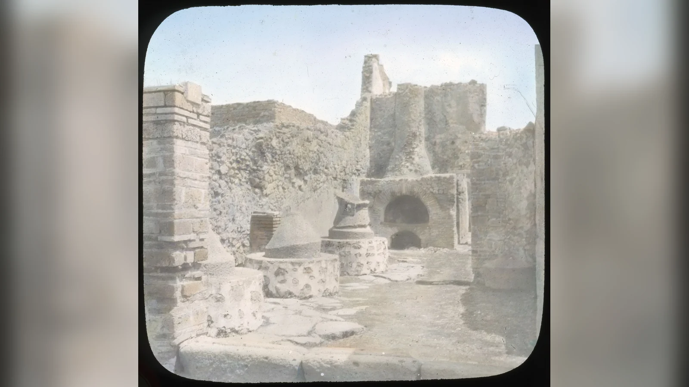
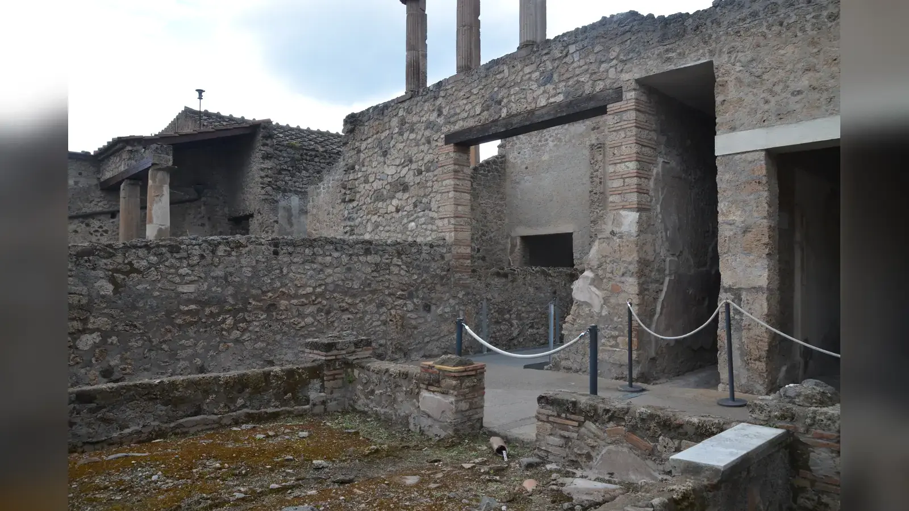

Pompeii nasıl yok oldu sorusunun kısa cevabı, popüler anlatılardaki "lav şehri yuttu" cümlesi değildir. MS 79'da Vezüv büyük bir patlama ürettiğinde Pompeii önce saatler süren pomza, kül ve taş yağışı altında kaldı. Biriken malzemenin ağırlığı çatılarda ve duvarlarda çökmelere yol açtı; sokakları dolduran pomza hareketi giderek zorlaştırdı. Patlamanın sonraki aşamasında püskürme sütunu kararsızlaşıp çöktüğünde sıcak gaz, kül ve kaya parçacıklarından oluşan piroklastik yoğunluk akımları kente ulaştı. Bazı insanlar ilk evrede yapı çökmeleriyle, bazıları sonraki akımların ısısı, külü, gazları ve solunum üzerindeki etkileriyle bağlantılı koşullarda öldü. Pompeii'yi yok eden temel mekanizma lav akışı değildi.
Felaket tek bir saniyede de gerçekleşmedi. Patlamanın ilk evresi kaçış için zaman bırakmıştı ve bulunan kurbanların sayısının tahmini nüfustan çok daha düşük olması, çok sayıda insanın şehirden ayrılabildiğini düşündürüyor. Geride kalanlar içinse koşullar saatler içinde ağırlaştı: pomza yükseldi, yapılar çöktü, depremler sürdü, görüş azaldı ve daha sonra piroklastik akımlar geldi. Bu nedenle Pompeii'yi "gündelik hayat sürerken bir anda donmuş şehir" diye tanımlamak etkileyici fakat eksik bir benzetmedir.
Patlamanın tam günü de uzun süre sanıldığı kadar kesin değildir. Geleneksel 24 Ağustos tarihi Genç Plinius'un mektubunun bazı el yazmalarına dayanır. Özgün mektup kayıptır ve nüshalar arasında tarih farklılıkları vardır. Sonbahar meyveleri, hasatla ilişkili buluntular, giysiler, bir sikke tartışması ve özellikle 2018'de bulunan 17 Ekim tarihli kömür yazısı sonbahar olasılığını güçlendirdi. INGV'nin güncel sentezlerinde 24–25 Ekim güçlü aday olarak öne çıkar. Pompeii'nin gerçek hikâyesi bu nedenle hem arkeolojinin hem volkanolojinin hem de antik metin eleştirisinin birlikte okunmasını gerektirir.
Pompeii, Vezüv Patlamasından Önce Nasıl Bir Şehirdi?
Pompeii, Napoli Körfezi'nin güneydoğusunda, Campania'nın verimli tarım ve ticaret ağının içinde yer alan canlı bir Roma kentiydi. İmparatorluğun dev metropollerinden biri değildi; fakat forumu, amfitiyatrosu, hamamları, tapınakları, fırınları, dükkânları, atölyeleri ve zengin konutlarıyla gelişmiş bir kent yaşamına sahipti. Nüfusu kesin değildir. Konut stokuna dayanan Miko Flohr yaklaşık 7.500–13.500 kişilik bir aralık önermiştir; başka çalışmalar yaklaşık 10.000 civarını, bazı yeni değerlendirmeler ise daha yüksek sayıları tartışır. Bu farklılık antik nüfusun doğrudan sayılmadığını, yapı kapasitesi ve yazıtlar gibi dolaylı kanıtlardan hesaplandığını gösterir.

Kentte seçkin ailelerle özgür bırakılmış eski köleler, zanaatkârlar, tüccarlar, köleler ve farklı ekonomik düzeylerde insanlar yan yana yaşıyordu. Duvarlara boyanmış seçim ilanları yerel siyasetin sokaklara taşındığını, grafitiler ise aşk, hakaret, isimler ve gündelik mesajların kamusal yüzeylerde dolaştığını gösterir. Büyük domusların freskli salonlarının arkasında mutfaklar, depolar ve hizmet alanları bulunuyordu. Fırınlar, termopolia adı verilen yiyecek satış noktaları ve atölyeler kentin ekonomik hayatının gündelik yüzünü oluşturuyordu.
Pompeii'nin erotik imgeleri ve genelevi modern kültürde o kadar öne çıkarılmıştır ki kent zaman zaman "ahlaki çöküş" klişesine indirgenir. Oysa Pompeii Arkeoloji Parkı'nın değerlendirmeleri erotik görüntülerin evlerden hamamlara, tavernalardan başka mekânlara kadar daha geniş Roma görsel kültürünün parçası olduğunu gösterir. Kentin tarihini yalnız cinsellikle açıklamak, fırıncıları, köleleri, çocukları, zanaatkârları, dini pratikleri ve yerel siyaseti görünmez kılar.

Üstelik MS 79'daki Pompeii tamamlanmış bir şehir değildi. MS 62 veya 63'teki büyük deprem çok sayıda yapıyı hasara uğratmış, onarım süreci yıllarca devam etmişti. Patlama sırasında bazı evlerde sıva, dekorasyon ve yapı çalışmaları sürüyordu. Vezüv, daha önceki bir afetin yaralarını hâlâ onarmakta olan bir kenti vurdu.
Vezüv Patlamadan Önce Uyarı Vermiş miydi?
Campania deprem etkinliğine yabancı değildi. Tacitus büyük depremi MS 62'ye, Seneca 63'e tarihler; bu yüzden modern çalışmalarda olay çoğu kez 62/63 depremi olarak anılır. Pompeii'de onarılmış çatlaklar, yeniden örülmüş duvarlar ve yarım kalmış dekorasyonlar bu sismik dönemin maddi izlerini korur. Sonraki yıllarda da sarsıntılar yaşandı.
Genç Plinius 6.20 numaralı mektubunda patlamadan önce günler boyunca yer sarsıntıları olduğunu, bunların Campania'da sık görülmesi nedeniyle başlangıçta olağanüstü korku yaratmadığını anlatır. Fakat Plinius Pompeii'de değil Misenum'daydı. Bu cümleden hareketle bütün Pompeii halkının "uyarıları görmezden geldiğini" söyleyemeyiz.
Modern volkanoloji açısından sismik hareketlilik, gaz değişimleri ve zemin deformasyonu gibi belirtiler bir volkanın izlenmesinde önemlidir. MS 79 insanlarının böyle bir izleme sistemi yoktu. Vezüv'ün volkanik geçmişine ilişkin antik gözlemler bulunsa da yaklaşan büyük patlamayı tahmin edebilecek araçlar ve kurumsal afet planları mevcut değildi.
Bu nedenle iki uç anlatı da sorunludur. Şehir tamamen işaretsiz bir felaketle karşılaşmadı; depremler vardı. Fakat bu işaretleri modern bilimsel anlamda "yaklaşan Plinian patlamanın uyarısı" olarak okuyabilecek bilgi de yoktu. Depremlerin bölgede sıradanlaşmış olması, yaklaşan tehlikenin büyüklüğünü fark etmeyi zorlaştırmış olabilir; bunu bireylerin psikolojisi hakkında kesin hükme çevirmemek gerekir.
Pompeii Nasıl Yok Oldu? Patlamanın Saat Saat Aşamaları
MS 79 olayı bugün Plinian patlama olarak adlandırılan büyük patlayıcı püskürmelerin tarihsel örneğidir. Terim, Genç Plinius'un yükselen bulutu uzun gövdeli ve dallara açılan bir çam ağacına benzetmesinden gelir. Magma parçalandıkça kül, pomza ve gaz atmosferde çok yüksek bir sütun oluşturdu. Rüzgâr, düşen malzemenin büyük bölümünü Pompeii yönüne taşıdı.
İlk büyük evrede şehre pomza lapillileri yağdı. Önce açık renkli, daha sonra daha gri pomza evresi belirginleşti. Saatler boyunca biriken hafif taşlar sokakları ve avluları doldurdu. Tehlike yalnız dışarıdaki düşen taşlar değildi. Çatılarda kalınlaşan volkanik yük, özellikle geniş açıklıklı ve depremden sonra zayıflamış yapılarda çökmelere yol açtı. 2003'te yayımlanan stratigrafik çalışma, bilinen kurbanların önemli bir bölümünün ilk düşme evresinde ve çoğunlukla yapı çökmeleriyle ilişkili olduğunu gösterdi.

Bu dönem aynı zamanda kaçış penceresiydi. Birçok kişi kenti terk etmiş olmalıdır. Ancak pomza yükseldikçe yürümek güçleşiyor, depremler ve düşen yapı parçaları yeni engeller yaratıyordu. Yoğun kül ve gecenin karanlığı yön bulmayı daha zor hâle getiriyordu.
Daha sonra püskürme sütunu sürekli ayakta kalamayacak kadar kararsızlaştı. Sütunun parçaları çöktüğünde sıcak gaz, kül ve kaya parçacıklarından oluşan karışımlar yere yakın biçimde yamaçlardan aşağı yayıldı. Bunlara piroklastik yoğunluk akımları denir. Bir lav nehri gibi davranmazlar; çok hızlı hareket edebilir, yüksek sıcaklık, parçacık yükü, dinamik basınç ve solunabilir kül nedeniyle öldürücü olabilirler.
Vezüv'e daha yakın Herkülaneum bu akımlarla daha erken karşılaştı. Pompeii'ye ilk akımların etkisi daha sınırlıydı; daha sonraki güçlü akımlar kente ulaşıp sokak ve odalara girdi. 2021'de yayımlanan modelleme, Pompeii'de incelenen ölümcül akımlardan birinin yaklaşık 17 dakika sürebilmiş olabileceğini hesapladı. Yazarlar, görece düşük dinamik basınç ve sıcaklıkta bile bu kadar uzun süre kül yüklü ortamda kalmanın ölümcül olabileceğini savundu. 2010'daki başka çalışma ise yüksek sıcaklığın belirleyici rolünü öne çıkarmıştı. Bu farklı sonuçlar, tek bir ölüm mekanizmasını bütün kurbanlara uygulamanın neden yanlış olduğunu gösterir.
Patlamanın ana yıkıcı evreleri yaklaşık bir günlük süreç içinde gelişti; fakat modellerin saatleri arasında farklılıklar vardır. Bu nedenle "saat 07.32'de herkes öldü" gibi yapay kesinliklerden kaçınmak gerekir. Güvenilir kronoloji, pomza yağışı, yapı çökmeleri, sütun çöküşleri ve piroklastik akımların ardışık bir afet oluşturduğunu gösterir.
İnsanlar Neden Zamanında Kaçamadı?
Önce önemli bir yanlış anlaşılmayı düzeltmek gerekir: herkes kaçamadı değil, birçok kişi muhtemelen kaçtı. Bulunan kurban sayısı nüfus tahminlerinin çok altındadır. Patlamanın ilk saatlerinde kentten ayrılmak mümkündü ve insanların önemli bölümünün bu fırsatı kullandığı düşünülür.
Geride kalanların nedenlerini tek tek bilmiyoruz. Bazıları evin açık sokaktan daha güvenli olduğunu düşünmüş olabilir. Bazıları aile üyelerini beklemiş, hareket kısıtlılığı yaşamış veya kaçışa geç başlamak zorunda kalmış olabilir. Yanında para veya değerli eşya bulunan bir kurbanın sırf servetini kurtarmak için geri döndüğünü kesin biçimde söylemek mümkün değildir. Arkeolojik nesne davranışı gösterir; niyeti her zaman göstermez.
Saatler ilerledikçe fiziksel çevre de değişti. Sokaklardaki pomza tabakası kalınlaştı, çatı ve duvarlar çöktü, sarsıntılar sürdü ve görüş azaldı. Açık alanda düşen malzemeye maruz kalmak ile binada kalıp çökme riskini göze almak arasında kolay bir seçim yoktu. Daha sonra piroklastik akımlar geldiğinde, kentte kalanların seçenekleri çok daha daralmıştı.
Modern afet planlamasını geçmişe taşımak da yanıltıcıdır. Bugün risk bölgesinde yaşayanlara resmî tahliye emri verilebilir. Pompeii halkı ise püskürme sütununun daha sonra çökeceğini, piroklastik akımların kente ulaşacağını veya pomza yağışının ne kadar süreceğini bilmiyordu. Felaketin kısa sürede sona ereceğini düşünmüş olabilecek insanlar bulunması makuldür; fakat bunu belirli kurbanlara ait belgelenmiş düşünce gibi anlatamayız.
Pompeii Halkı Gerçekte Nasıl Öldü?
Pompeii'deki ölümleri iki temel afet evresi içinde değerlendirmek gerekir. İlk evrede pomza ve kül yağışı sırasında bazı insanlar çöken çatılar, duvarlar ve yapı parçaları nedeniyle öldü. Stratigrafik konumları bu kurbanların piroklastik akımlardan önce öldüğünü gösterebilir. Kentin deprem sonrası onarım hâlinde olması da yapı dayanıklılığı açısından önemlidir.
Daha sonraki kurbanların büyük bölümü piroklastik yoğunluk akımlarının bıraktığı tabakalarda bulundu. Bu ortamda sıcak gaz ve kül termal hasar yaratabilir, yoğun ince kül solunumu nefes almayı engelleyebilir, parçacıklar ve akımın mekanik etkisi travmaya katkıda bulunabilir. Etkilerin göreli önemi kişinin bulunduğu konuma, akımın sıcaklığına, yoğunluğuna ve süresine göre değişir.
2010'da Mastrolorenzo ve çalışma arkadaşları Pompeii çevresinde ısının daha önce düşünülenden çok daha belirleyici olduğunu savundu. 2021'de Pensa ve arkadaşlarının modeli ise Pompeii'de incelenen akımın yaklaşık 17 dakika sürmesinin, daha düşük sıcaklık ve dinamik basınca rağmen kül solunumunu ölümcül hâle getirebileceğini öne sürdü. Bilimsel literatürdeki bu ayrılık saklanmamalıdır.
Kalıplardaki bükülmüş kol ve bacaklar da geçmişte yüksek ısıyla ilişkili "pugilistik" veya gladyatör benzeri duruşla açıklanmıştır. Ancak 2023 tarihli kalıp araştırması, alçının kemiklere ve ölüm sonrası süreçlere etkisini hesaba katmadan kesin adli sonuçlara ulaşmanın sakıncalı olduğunu gösterir.
Bu nedenle "kanları kaynadı", "anında buharlaştılar" veya "hepsi külden boğuldu" gibi cümleler güvenilir değildir. Pompeii'de farklı zamanlarda, farklı mekânlarda ve farklı fiziksel etkiler altında ölen insanlar vardı. Bilimsel olarak en doğru anlatım, ısı, solunum etkisi, travma ve yapı çökmelerini bağlama göre ayırmaktır.
Pompeii'de Kaç Kişi Öldü?
Kazılarda binden fazla kurbana ait insan kalıntısı bulunmuştur. 2003 tarihli ayrıntılı çalışma yaklaşık 1.150 kurbanı değerlendirmiş, Pompeii Arkeoloji Parkı da günümüzde binden fazla kurbanın kalıntısının bilindiğini belirtmiştir. Bu rakamı "Pompeii'de tam olarak 1.150 kişi öldü" diye okumak yanlıştır.
Kentin tamamı aynı yöntemlerle kazılmış değildir ve bazı alanlar hâlâ gömülüdür. Şehir dışında kaçarken ölen kişilerin tamamını bilmek de mümkün değildir. Ayrıca Pompeii nüfusunun kendisi tartışmalıdır. Modern tahminler yaklaşık 8.000–10.000'den 15.000 ve daha yüksek değerlere kadar değişebilir; kullanılan yöntem ve şehir ile çevre bölgenin nasıl tanımlandığı sonucu etkiler.
Bulunan kurbanların tahmini nüfustan çok daha az olması, çok sayıda insanın kaçmış olabileceğinin güçlü göstergesidir. Buna rağmen kesin bir "kaçış yüzdesi" üretmek güvenilir değildir. Herkülaneum, Stabiae, Oplontis ve çevre villalardaki kurbanlar da aynı patlamada ölmüş olsalar bile Pompeii'nin ölüm sayısına gelişigüzel eklenmemelidir.
Pompeii'deki Taşlaşmış İnsanlar Gerçek mi?
Pompeii'deki ünlü insan figürleri gerçek kurbanlarla bağlantılıdır; fakat bunlar taşlaşmış bedenler değildir. Piroklastik kül bazı bedenlerin çevresinde sertleşti. Yumuşak dokular zamanla çürüyüp yok olduğunda kül tabakası içinde beden biçiminde boşluklar kaldı. Giuseppe Fiorelli 1863'te bu boşluklara sıvı alçı dökme yöntemini sistematik hâle getirdi.

Alçı sertleşip çevresindeki kül kaldırıldığında bedenin dış biçimi, giysi kıvrımları ve kimi zaman yüzey ayrıntıları görünür hâle geldi. Bazı kalıpların içinde gerçek kemik parçaları vardır. Dolayısıyla kalıp ne tamamen heykeldir ne de taşlaşmış veya mumyalanmış bir beden; biyolojik bedenin volkanik malzemede bıraktığı negatif boşluğun dökümüdür.
Pompeii Arkeoloji Parkı Fiorelli döneminden bu yana yüzün biraz üzerinde kalıp üretildiğini belirtir. Zaman içinde alçı dışında reçine de kullanılmış, günümüzde lazer tarama, üç boyutlu modelleme, radyografi ve taşınabilir XRF gibi tahribatsız teknikler devreye girmiştir. 2023'te yayımlanan çalışma, kalıplardaki kemiklerle alçı arasındaki kimyasal ilişkinin antropolojik yorum için önemini gösterdi.
Kalıplar aynı zamanda etik bir sorumluluk taşır. Bunlar korku turizmi için yapılmış heykeller değil, gerçek insanların kalıntılarıyla doğrudan ilişkili arkeolojik materyallerdir. Yüz ifadelerini ölüm anının kusursuz fotoğrafı gibi okumak da doğru değildir; gömülme, çürüme ve döküm süreci bugün gördüğümüz biçimi etkilemiştir.
Genç Plinius Patlamayı Nasıl Anlattı?
Vezüv patlamasının en önemli yazılı tanığı Genç Plinius'tur; ancak Pompeii'nin içinden yazmadı. Olay sırasında on yedi yaşındaydı ve amcası Yaşlı Plinius ile Napoli Körfezi'nin karşı tarafındaki Misenum'da bulunuyordu. Patlama bulutunu uzaktan gördü, daha sonra kendi yaşadığı sarsıntı, karanlık ve kül yağışını anlattı.
Tacitus'un isteği üzerine kaleme aldığı 6.16 ve 6.20 numaralı mektuplar olaydan yaklaşık yirmi yedi yıl sonra, muhtemelen MS 106--107'de yazıldı. İlk mektubun temel amacı Yaşlı Plinius'un ölümünü aktarmaktı. İkinci mektup Genç Plinius ile annesinin Misenum'daki deneyimini anlatır. Bunlar vazgeçilmez birincil kaynaklardır; fakat modern saha raporu değildir.

Plinius'un en ünlü betimlemesi, yükselen bulutun gövde ve dallarıyla bir çam ağacını andırmasıdır. Modern "Plinian patlama" terimi bu tasvirle ilişkilidir. Mektuplar depremler, kül, karanlık, denizin davranışı ve insan paniği konusunda da bilgi verir.
Bununla birlikte Plinius Pompeii'deki insanların son anlarını görmedi. Amcasının yolculuğunun bazı kısımlarını sonradan başkalarından öğrendiğini kendisi belirtir. Bu nedenle mektuplar arkeolojik tabakalar ve volkanolojik modellerle karşılaştırılarak kullanılmalıdır.
Yaşlı Plinius Neden Vezüv'e Doğru Gitti?
Yaşlı Plinius yalnız doğa araştırmacısı ve Naturalis Historia'nın yazarı değildi; Misenum'daki Roma filosunun komutanıydı. Genç Plinius'a göre sıra dışı bulutu fark ettiğinde önce bilimsel merakla daha yakından incelemek istedi. Hafif bir gemi hazırlattı ve yeğenine kendisiyle gelme fırsatı sundu.
Ardından Rectina'dan yardım isteyen bir mesaj geldi. Kıyıdaki insanlar için deniz yoluyla tahliye önemliydi. Plinius planını değiştirdi, daha büyük gemileri harekete geçirdi ve yalnız Rectina'ya değil kıyıdaki başkalarına da yardım etmeyi amaçladı. Yolculuk böylece bilimsel gözlemden kurtarma görevine dönüştü.
Kıyıya yaklaştıkça sıcak kül, taş ve pomza gemileri tehdit etti. Plinius sonunda Stabiae'de Pomponianus'un bulunduğu yere ulaştı. Koşullar ağırlaşırken dışarı çıktıklarında çöktü ve öldü. Genç Plinius cesedinin daha sonra dıştan yara almamış ve uyuyor gibi bulunduğunu söyler.
Ölüm nedeni kesin değildir. Solunum sorunları, volkanik gazlar veya kardiyovasküler bir olay farklı yorumlarda öne çıkar. Elimizde modern otopsi yoktur. Bu nedenle Yaşlı Plinius'un "lav tarafından öldürüldüğü" gibi anlatılar yanlış, belirli bir tıbbi nedeni kesinleştiren anlatılar ise kanıtın ötesindedir.
Pompeii ve Herkülaneum Aynı Şekilde mi Yok Oldu?
Aynı patlama iki kenti farklı biçimde etkiledi. Pompeii Vezüv'ün güneydoğusunda, rüzgârın yoğun pomza taşıdığı yöndeydi. Herkülaneum ise yanardağa daha yakındı ve ilk aşamada Pompeii kadar yoğun pomza yağışı almasa da piroklastik yoğunluk akımlarıyla çok daha erken karşılaştı.
Herkülaneum'daki akımların yüksek sıcaklığı organik maddeleri karbonlaştırdı. Ahşap kapılar, mobilyalar, merdivenler, yiyecekler, ipler, balmumu tabletler ve Villa dei Papiri'nin papirüsleri olağanüstü koşullarda korunabildi. UNESCO da Herkülaneum'daki üst katların ve organik malzemenin dikkat çekici korunmasını vurgular.

Antik sahildeki kemerli yapılarda yüzlerce insan kalıntısının bulunması, birçok kişinin deniz yoluyla kaçmayı beklediğini düşündüren önemli bağlamlardan biridir. Pompeii'de ise kurbanlar evlerde, sokaklarda, bahçelerde ve farklı volkanik tabakalar içinde bulunur.
Bu karşılaştırma, "Vezüv şehirleri külle kapladı" cümlesinin ne kadar yetersiz olduğunu gösterir. Rüzgâr, topoğrafya, yanardağa uzaklık ve akımların fiziksel özellikleri birkaç kilometrelik mesafelerde bile farklı ölüm ve korunma koşulları yarattı.
Patlama 24 Ağustos'ta mı, Sonbaharda mı Gerçekleşti?
Geleneksel 24 Ağustos tarihi, Genç Plinius'un mektubunun bazı kopyalarında bulunan Roma takvimi ifadesine dayanır. Ancak özgün mektup kayıptır ve farklı el yazmalarında ay ve gün değişiklikleri bulunur. Bu nedenle tarih daha 2018 keşfinden önce bile tartışılıyordu.
Pompeii'de nar, ceviz, incir ve kestane gibi sonbaharla ilişkilendirilen yiyecekler; üzüm hasadı ve şarap üretimiyle bağlantılı kalıntılar; kalın giysiler ve ısıtma araçları Ağustos tarihine karşı kullanılmıştır. Bu bulguların hiçbiri tek başına kesin kanıt değildir. Gıda saklanabilir, giysiler farklı koşullarda kullanılabilir ve tarımsal takvim değişebilir.
Bir kurbanın yanında bulunan Titus sikkesi de tartışmaya katılmıştır. Üzerindeki unvanların tarihlenmesi patlamayı Ağustos sonrasına götürebilir; ancak sikkenin okunması ve kronolojisi konusunda görüş ayrılıkları olduğu için bunu tek başına belirleyici kabul etmek doğru değildir.
2018'de Regio V'deki Bahçeli Ev'de bulunan kömür yazısı daha güçlü bir veri sundu. Yenileme hâlindeki bir odanın duvarındaki not 17 Ekim tarihini taşıyordu. Kömür kolay silinen bir malzeme olduğundan ve oda o sırada yapım aşamasında bulunduğundan yazının çok eski olması düşük olasılık olarak değerlendirildi. Bu durumda patlama 17 Ekim'den sonra gerçekleşmiş olmalıdır.
Pompeii Arkeoloji Parkı keşfin ekim hipotezini desteklediğini açıkladı. INGV'nin 2022 sentezinde 24–25 Ekim en güçlü aday olarak verildi. Bu nedenle güncel bir makalede "Vezüv 24 Ağustos'ta kesin olarak patladı" denmemelidir. En doğru yaklaşım, 24 Ağustos'un geleneksel tarih olduğunu ve sonbahar, özellikle ekim sonu lehine kanıtların belirgin biçimde güçlendiğini açıklamaktır.
Pompeii'nin MS 79 Sonrası Tamamen Terk Edildiği Söylenebilir mi?
Uzun süre kullanılan "şehir gömüldü ve yeri tamamen unutuldu" anlatısı da yeni veriler karşısında düzeltilmelidir. Felaket Pompeii'yi Roma kenti olarak sona erdirdi; kamusal kurumları ve eski kentsel yaşamı geri dönmedi. Fakat bu, patlamadan sonra bölgeye hiç kimsenin girmediği anlamına gelmez. Volkanik örtünün üst kısımlarına ulaşılabilen yerlerde değerli yapı malzemelerinin geri alınması ve gömülü yapılara yeniden erişim girişimleri olduğu bilinir.
2026'da Insula Meridionalis'te yayımlanan araştırmalar bu tabloyu daha ayrıntılı hâle getirdi. Casa dei Mosaici Geometrici çevresindeki bazı alanlarda MS 79 sonrasında yeniden kullanım izleri tespit edildi ve faaliyetlerin Geç Antik Çağ'da, yaklaşık MS 5. yüzyıl ortalarına kadar uzanabildiği gösterildi. Eski domusların bazı bölümleri artık özgün işlevlerini taşımıyor, daha mütevazı evsel veya üretim amaçlarıyla kullanılıyordu. Bu, antik Pompeii'nin yeniden kurulduğu anlamına gelmez; yıkıntıların farklı dönemlerde insanlar tarafından yeniden değerlendirildiğini gösterir.
Felaket sonrası faaliyetlerin başka bir boyutu da kurtarma ve yağmadır. Bir yapının üst bölümü volkanik örtünün üzerinde kalmışsa veya yeri hatırlanıyorsa değerli mermer, metal ve başka malzemeler geri alınabiliyordu. Bu nedenle bugün bazı antik mekânlarda görülen eksiklikleri otomatik olarak patlamanın yıkıcı etkisine bağlamak doğru değildir. Patlama sonrası insan müdahalesi de arkeolojik kaydın parçasıdır.
Bu yeni bulgular Pompeii'nin tarihini iki tarihe sıkıştırmamayı gerektiriyor: MS 79 "son", 1748 "yeniden başlangıç" değildir. Arada malzeme kurtarma, sınırlı yeniden kullanım, arazi dönüşümü ve yerel hafızanın farklı düzeylerde devam ettiği uzun bir dönem vardır. Şehrin Roma dönemi yaşamı MS 79'da sona ermiş olsa da alanın tarihi sona ermemiştir. Modern arkeoloji artık bu patlama sonrası yüzyılları da Pompeii hikâyesinin parçası olarak inceliyor.
Pompeii Nasıl Yeniden Keşfedildi?
Pompeii'nin 79'da tamamen unutulup 1748'de bir kişi tarafından keşfedildiği anlatısı basitleştiricidir. Yeni araştırmalar, patlama sonrasında bazı alanlarda malzeme geri kazanımı ve Geç Antik Çağ'a kadar uzanan yeniden kullanım izleri bulunduğunu gösterir. 2026'da Insula Meridionalis'te yayımlanan bulgular bazı eski domus alanlarının MS 5. yüzyıl ortalarına kadar farklı evsel ve üretim işlevleriyle kullanıldığını ortaya koydu.
16. yüzyıl sonunda Domenico Fontana Sarno suyunu taşımaya yönelik kanal çalışmaları sırasında gömülü yapılara ve yazıtlara rastladı. Bu karşılaşma modern Pompeii kazısının başlangıcı değildi ve kalıntıların antik Pompeii'ye ait olduğu hemen anlaşılmadı.
1748'de Bourbon kralı III. Carlo döneminde Civita bölgesinde geniş kazılar başladı. İlk çalışmalar modern bilimsel arkeolojiden çok saray koleksiyonlarına değerli heykel, fresk ve nesne kazandırma mantığı taşıyordu. Tüneller açılıyor, dikkat çekici buluntular çıkarılıyor ve bağlam kaydı bugünkü standartlara göre sınırlı tutuluyordu. Alan başlangıçta Stabiae sanıldı; 1763'te yazıt kanıtları antik Pompeii kimliğini kesinleştirdi.

19. yüzyılda Giuseppe Fiorelli kent dokusunun regio ve insula sistemiyle düzenlenmesi, daha sistemli kayıt ve beden boşluklarına alçı dökülmesiyle önemli bir dönüşüm yarattı. Sonraki dönemlerde stratigrafi, antropoloji, paleobotanik, jeoloji ve dijital belgeleme kazının ayrılmaz parçaları hâline geldi.
Dolayısıyla "Pompeii'yi kim keşfetti?" sorusunun tek isimli cevabı yoktur. Fontana erken bir karşılaşmayı, 1748 Bourbon kazıları geniş ölçekli yeniden açılışı, 1763 kimlik tespitini ve Fiorelli modernleşen arkeolojik yöntemi temsil eder.
Pompeii Kazıları Roma Dünyası Hakkında Neleri Değiştirdi?
Pompeii'nin asıl gücü imparatorların değil, gündelik hayatın arkeolojisidir. Roma edebiyatında nadiren ayrıntılı biçimde görülen mutfaklar, yataklar, dükkân tezgâhları, değirmenler, bahçeler, duvar yazıları ve küçük kişisel eşyalar burada bağlamlarıyla birlikte bulunur.
Büyük evler statü gösterisinin mimarisini gösterirken hizmet alanları bu gösterişin arkasındaki emeği görünür kılar. Civita Giuliana'daki köle odasında basit yatakların depolama ve çalışma ekipmanlarıyla aynı dar mekânda bulunması, kölelerin yaşam koşullarını seçkin metinlerinden farklı bir düzeyde anlamamızı sağlar.
Fırınlar ve yiyecek işletmeleri üretim ekonomisini ortaya çıkarır. Regio IX'da 2023'te duyurulan ve "fırın-hapishane" olarak nitelenen mekân, insan ve hayvan emeğinin dar ve kontrollü bir alanda tahıl öğütmek için örgütlendiğini düşündüren mimari izler sundu. Bu tür buluntular Roma köleliğini soyut bir kurum olmaktan çıkarıp çalışma alanının içine yerleştirir.
Duvar yazıları ve seçim ilanları da benzersizdir. Adayları destekleyen gruplar, isimler, kişisel mesajlar ve kaba şakalar kentin farklı toplumsal katmanlarını görünür kılar. Ev kutsal alanları dinin yalnız büyük tapınaklarda yaşanmadığını; günlük ritüelin ev ve işyeri içinde de sürdüğünü gösterir.

Duvar resimleri ve mozaikler yalnız estetik eser değildir. Mitolojik sahneler ev sahibinin kültürel iddiaları, dekorasyon modaları ve odanın toplumsal işlevi hakkında bilgi verir. Yiyecek kalıntıları ise beslenme, ticaret ve mevsimsellik hakkında veri sağlar. Hayvan kalıntıları ulaşım, üretim ve insan-hayvan ilişkilerini tamamlar.
Pompeii bu yüzden bir "Roma fotoğrafı" değil, çok katmanlı bir veri setidir. Felaket farklı evleri ve işyerlerini benzer zaman aralığında örttüğü için arkeologlar aynı kentin farklı sosyal dünyalarını karşılaştırabilir.

Pompeii Hakkında Doğru Bilinen Yanlışlar
Pompeii lav altında kalmadı. MS 79'da kenti örten temel malzemeler pomza, kül ve piroklastik yoğunluk akımlarının çökeltileriydi. Vezüv başka dönemlerde lav üretmiştir; bu gerçek 79'daki Pompeii mekanizmasını değiştirmez.
Şehirdeki herkes ölmedi. Binden fazla kurban bulunmuştur; ancak nüfus bunun çok üzerindeydi. Birçok kişinin erken aşamada kaçmış olması muhtemeldir.
İnsan bedenleri taşa dönüşmedi. Ünlü figürler, çürüyen bedenlerin sert kül içinde bıraktığı boşluklara alçı veya başka malzeme dökülerek oluşturulan kalıplardır. İçlerinde kemikler bulunabilir.
Patlama tamamen uyarısız değildi. Öncesinde sarsıntılar yaşandı ve kent büyük 62/63 depreminden beri onarım hâlindeydi. Fakat Romalıların bu belirtilerden modern volkanik tahmin yapabileceğini varsaymak da yanlıştır.
İnsanlar tek bir saniyede donmadı. Pomza yağışı saatler sürdü, bazı yapılar çöktü, insanlar kaçtı veya sığındı ve daha sonra piroklastik akımlar geldi. Kalıplar bu uzun sürecin belirli anlarında ölen insanlara aittir.
Pompeii yalnız zenginlerin ve cinselliğin şehri değildi. Erotik sanat gerçek olmakla birlikte kentte köleler, zanaatkârlar, tüccarlar, kadınlar, çocuklar, fırıncılar ve farklı toplumsal gruplar yaşıyordu.
Vezüv sönmüş değildir. Son bilinen patlaması 1944'tür ve günümüzde aktif yanardağ olarak izlenmektedir.
Son Kazılar Pompeii Hakkında Neler Gösteriyor?
Pompeii hâlâ yeni bilgi üretiyor. Güncel kazıların önemli merkezlerinden Regio IX'da 2023'ten itibaren evler, üretim alanları, seçim yazıları ve ev içi dinsel pratikler üzerine yeni veriler yayımlandı. Fırın kompleksi, insan ve hayvan emeğinin tahıl öğütmede nasıl kullanıldığına dair özellikle güçlü bir bağlam sundu.
2024'te aynı bölgede mavi duvarlı bir kutsal alan, iki yeni kurban ve Roma inşaat süreçlerine ilişkin izler ortaya çıkarıldı. Büyük ziyafet salonundaki mitolojik freskler Troia Savaşı çevresindeki figürleri ev içi temsil dünyasına yerleştirdi. Bu buluntular "tarihi baştan yazmaktan" çok, elit evlerin mitoloji, ziyafet ve toplumsal gösteri arasındaki ilişkisini daha ayrıntılı anlamamızı sağlıyor.
2025'te özel bir ziyafet salonuna bağlı büyük hamam kompleksi ve Dionysos çevresini konu alan büyük ölçekli bir II. Stil frizi kamuoyuna duyuruldu. Bunlar Pompeii evlerinde lüksün yalnız dekoratif değil, misafir ağırlama ve kültürel kimlik üretme işlevi taşıdığını güçlendiren yeni örneklerdir.
2026'da Casti Amanti fırınındaki araştırmada iki büyük otçula ait kalıntılar yayımlandı. Aynı yıl Insula Meridionalis'teki araştırmalar MS 79'dan sonra bazı alanların Geç Antik Çağ'a kadar yeniden kullanıldığını gösterdi. Bu, Pompeii'nin patlamadan sonra "hiç kimsenin dokunmadığı mühürlü kapsül" olduğu düşüncesini zayıflatır.
Son kazıların ortak yönü, Pompeii'nin artık yalnız felaket günü için araştırılmamasıdır. Köle emeği, inşaat, çocukluk, kadınlar, hayvanlar, yiyecek üretimi, ev dini ve patlama sonrası yaşam gibi konular şehrin çok daha geniş tarihini görünür kılıyor.
Vezüv Bugün Yeniden Patlayabilir mi?
Evet. Vezüv aktif bir yanardağdır. Smithsonian Global Volcanism Program son bilinen patlamasını 1944 olarak kaydeder. Ancak "aktif" demek "yakında kesin patlayacak" demek değildir. Patlamanın kesin gününü önceden söyleyen güvenilir bir yöntem yoktur.
Vezüv Osservatorio Vesuviano ve INGV tarafından sismik hareketlilik, zemin deformasyonu, termal ve jeokimyasal parametrelerle sürekli izlenir. Eylül 2026 tarihli resmî özette alarm seviyesi yeşildir ve parametrelerin temel seviyelerde olduğu bildirilmiştir. Bu durum gelecekte patlama olmayacağını değil, mevcut verilerde alarm yükseltmeyi gerektiren bir değişim görülmediğini ifade eder.
Riskin büyüklüğü çevredeki yoğun nüfusla artar. İtalya Sivil Savunması kırmızı ve sarı risk bölgeleri tanımlar. Kırmızı bölge piroklastik akımların ulaşabileceği ve yoğun kül/pomza birikiminin çatılarda çökme riski yaratabileceği alanları kapsar. Resmî plana göre kırmızı bölgedeki temel güvenlik önlemi patlama öncesi tahliyedir.
Alarm aşamasında tahliye operasyonu için azami 72 saatlik planlama bulunur. Bu "yanardağ üç gün önce haber verir" anlamına gelmez; tahliye organizasyonunun hedeflenen süresidir. MS 79 felaketi modern planlama açısından da önemlidir çünkü volkanik riskin yalnız lavdan oluşmadığını açık biçimde gösterir.
Felaketin Kronolojisini Arkeologlar Nasıl Yeniden Kuruyor?
Pompeii'de olayların sırasını anlamamızı sağlayan temel yöntem stratigrafidir. Volkanik tabakaların üst üste geliş sırası fiziksel bir kronoloji oluşturur. Bir kurban pomza tabakasının içinde bulunuyorsa ilk düşme evresiyle; daha üstteki piroklastik akım çökellerinde bulunuyorsa sonraki evreyle ilişkilendirilebilir. Bazı kurbanların ilk akımlardan sonra yaşamış olabileceğini gösteren konumlar, herkesin aynı anda ölmediğini doğrudan ortaya koyar.
Pomzanın kalınlığı ve tane özellikleri rüzgâr ile püskürme sütunu hakkında bilgi verir. Akım çökellerindeki ince tabakalanma ve kum dalgasına benzeyen yapılar ise malzemenin yalnız gökten düşmediğini, yere yakın türbülanslı akımlarla taşındığını gösterebilir. Binaların çökme yönü ve odalara dolan malzeme de akımların mekanik etkisini anlamaya yardım eder.
2024'te yayımlanan arkeosismolojik çalışma, patlama sırasında gerçekleşen depremlerin bazı yapı çökmelerine ek katkıda bulunmuş olabileceğini tartıştı. Bu, pomza yükünün rolünü ortadan kaldırmaz; aynı anda birden fazla tehlikenin etkili olduğunu gösterir.
Plinius'un mektupları bu fiziksel kayıtla karşılaştırılır. Uzaktan gördüğü yükselen sütun Plinian düşme evresiyle uyumludur; fakat Pompeii'deki her tabakayı bir Plinius cümlesine bağlamak mümkün değildir. Mektup, jeoloji ve arkeoloji farklı ölçeklerde veri üretir.
Aynı kaynak eleştirisi patlama tarihi için de geçerlidir. Tek bir meyve, sikke veya yazıt bütün kronolojiyi tek başına belirlemek zorunda değildir. Fakat bağımsız kanıtlar aynı mevsimi göstermeye başladığında sonbahar hipotezi güçlenir. 17 Ekim kömür yazısının önemi, daha önce tartışılan sonbahar göstergelerinin üzerine gelmesidir.
İnsan davranışını yorumlarken de sınır aynıdır. Bir kişinin yanında para bulunması gözlemdir; "parası için geri döndü" yorumu ise kanıtlanması çok daha zor bir psikolojik hikâyedir. Pompeii'nin iyi korunması bu tür anlatıları cazip kılar. Bilimsel yaklaşım, gözlenen veri ile olası açıklamayı birbirinden ayırır.
Pompeii'de Afet Sırasında Depremlerin Rolü
Vezüv patlamasının anlatısı çoğu zaman gökten düşen pomza ve daha sonraki piroklastik akımlara odaklanır. Fakat Genç Plinius patlama sırasında güçlü sarsıntıların sürdüğünü de anlatır. Son yıllardaki arkeosismolojik araştırmalar bu depremlerin yalnız korku yaratmakla kalmayıp bazı yapıların çökmesine katkı sağlamış olabileceğini yeniden gündeme getirdi.
2024'te yayımlanan çalışma, belirli yapılardaki hasar örüntülerini yalnız düşen volkanik malzemenin dikey yüküyle açıklamanın yeterli olmayabileceğini savundu. Duvarların konumu, kırılma biçimleri ve insan kalıntılarının bağlamı, patlama devam ederken meydana gelen sismik hareketin de etkili olabileceğini düşündürdü. Bu sonuç bütün Pompeii çökmelerinin depremden kaynaklandığı anlamına gelmez. Kentte pomza yüküne bağlı çatı çökmelerinin güçlü kanıtı zaten vardır.
Bu yeni yaklaşım afetin çoklu tehlike niteliğini daha görünür kılar. Aynı saatlerde insanlar düşen pomza, yapısal zayıflık, deprem, karanlık ve daha sonra piroklastik akımlarla karşı karşıya kalmış olabilir. Modern afet biliminde "bileşik tehlike" diye ele alınan durumun tarihsel bir örneği burada görülür.
MS 62/63 depreminden kalan hasarların bazı yapılarda hâlâ onarılıyor olması da önemlidir. Bir binanın patlama günündeki dayanıklılığı yalnız Vezüv'ün ne kadar pomza yağdırdığına değil, önceki onarımların niteliğine ve yapının o günkü durumuna da bağlıydı. Bu nedenle Pompeii'deki yıkım haritasının her mahallede aynı olmaması şaşırtıcı değildir.
Bu tablo insanların kararlarını yorumlarken de ihtiyat gerektirir. Dışarı çıkmak düşen malzemeye maruz kalmak, içeride kalmak ise çökme riski demekti. Patlama ilerledikçe hangi seçeneğin daha güvenli olduğu değişmiş olabilir. Arkeoloji bize bu seçeneklerin fiziksel koşullarını gösterebilir; tek tek insanların neden birini seçtiğini her zaman söyleyemez.
Pompeii'nin modern araştırmaya sunduğu önemli derslerden biri, büyük afetlerin tek bir tehlikeden oluşmadığıdır. Volkanik patlama, deprem ve yapı hasarı birbirini besleyebilir. Kentin yok oluşunu yalnız "kül" veya yalnız "sıcak gaz" ile açıklamak bu karmaşıklığı kaybettirir.
Pompeii'de Son Günün Gündelik Hayatı Hakkında Ne Biliyoruz?
Pompeii'nin en güçlü yanı, patlamadan önceki yaşamı yalnız anıtsal yapılardan değil, çok küçük maddi izlerden okuyabilmemizdir. Ancak "insanlar tam şu işi yaparken öldü" biçimindeki aşırı kesin hikâyelerden kaçınmak gerekir. Bir fırında bulunan kap, bir odadaki yatak veya tezgahtaki eşya mekânın işlevini gösterebilir; nesnenin patlamanın başladığı dakikada kullanıldığını her zaman kanıtlamaz. Arkeolojik bağlam gündelik hayatın yapısını yeniden kurar, her bireyin son saatini eksiksiz bir senaryoya dönüştürmez.
Fırınlar özellikle değerlidir. Pompeii'de çok sayıda değirmen ve ekmek üretim alanı bulunmuştur. Büyük değirmen taşlarının hayvan veya insan gücüyle döndürülmesi, tahılın una çevrilmesi ve fırınlarda pişirilmesi kent ekonomisinin temel faaliyetlerinden biriydi. Karbonlaşmış ekmek örnekleri Roma ekmeğinin biçimi hakkında doğrudan veri sağlar. Amforalar da şarap, yağ ve başka ürünlerin taşınma ve depolanma ağlarını görünür kılar.
Thermopolium olarak adlandırılan yiyecek satış noktaları ev dışı tüketimin önemini gösterir. Tezgâhlara gömülü kaplar, resimli dekorasyonlar ve hayvan kalıntıları işletmelerin işleyişine ilişkin ipuçları verir. Modern "Roma fast food'u" benzetmesi anlaşılır olsa da antik işletmeyi günümüz restoranıyla birebir eşitlememek gerekir. Önemli olan, yiyecek üretimi ve satışının Pompeii sokaklarında yoğun bir ekonomik faaliyet olduğunun maddi olarak görülebilmesidir.
Seçim yazıları kentin politik ritmini gösterir. Ev ve dükkân cephelerine boyanan programmata yerel magistralık adaylarını destekleyen kişi ve grupların isimlerini taşır. Regio IX'daki yeni kazılarda evlerin içinde de seçim yazıları bulunması, siyasi destek ağlarının özel mekânlarla ilişkisini yeniden tartışmaya açtı. Bunlar Roma yerel siyasetinin yalnız forumdaki resmî törenlerden oluşmadığını gösterir.
Ev içi din de görünürdür. Lararium denen kutsal alanlarda evin koruyucu tanrıları ve başka tanrısal figürlerle ilişkili ritüeller yürütülüyordu. Sunu kalıntıları ve küçük altarlar dinin günlük yaşamdan ayrı bir kurum olmadığını gösterir. Regio IX'daki yeni kutsal alanlar bu pratiğe yeni bağlamlar eklemiştir.
Kadınların yaşamı yalnız seçkin portrelerinden okunmaz. Yazıtlar, mezar anıtları, iş aletleri, kişisel eşyalar ve ticari kayıtlar kadınların ev, ekonomi ve kamusal görünürlük içindeki farklı konumlarını ortaya koyar. Özgür doğmuş kadınlar, azatlı kadınlar ve köle kadınların deneyimleri aynı değildi. Pompeii Arkeoloji Parkı'nın 2025--2026 dönemindeki kadınlara odaklanan sergisi de bu çeşitliliği özellikle öne çıkardı.
Çocuklar da arkeolojik kayıtta giderek daha görünürdür. Küçük yataklar, oyuncaklar, eğitimle ilişkili mekânlar ve duvarlara yapılmış çizimler çocukluğun maddi izlerini oluşturur. Bu bulgular Pompeii'yi yalnız yetişkin erkek yurttaşların kenti olarak anlatan geleneksel bakışı genişletir.
Hayvanlar kentin işleyişinin parçasıydı. Atlar ve katırlar ulaşım, taşıma ve üretimde kullanılıyor; köpekler evlerde bulunuyor; hayvan kemikleri beslenme ekonomisini gösteriyordu. 2026'da Casti Amanti fırınında yeniden incelenen iki büyük otçulun kalıntıları, üretim mekânları ile hayvan emeğinin ilişkisine yeni veri sağladı.
Bütün bu kanıtlar felaketin boş bir dekoru değil, üretim yapan, seçimlere hazırlanan, evlerini tamir eden, yemek hazırlayan ve aile yaşamını sürdüren bir toplumu kestiğini gösterir. Fakat bu kesinti tek bir anda gerçekleşmedi. Patlama başladığında faaliyetler bırakıldı, insanlar kararlar aldı ve şehir saatler boyunca değişen bir afet ortamına dönüştü. Pompeii'nin gündelik hayatı bu nedenle "donmuş an" değil, kesintiye uğramış süreç olarak okunmalıdır.
Pompeii'nin Korunması Neden Bugün de Bir Arkeoloji Sorunu?
Pompeii'nin kazılması aynı zamanda yeni bir koruma probleminin başlamasıdır. Volkanik tabaka altında kapalı kalan duvar resmi, sıva ve yapı elemanı açığa çıktığı anda yağmur, güneş, sıcaklık değişimleri, biyolojik büyüme ve ziyaretçi baskısıyla karşılaşır. Modern yönetimin hedefi bu nedenle her gömülü alanı olabildiğince hızlı açmak değildir. Kazılan alanların korunması ve eski kazı cephelerinin güvenli hâle getirilmesi en az yeni keşif kadar önemlidir.
18. ve 19. yüzyıl kazılarında değerli fresklerin duvarlardan sökülerek koleksiyonlara taşınması yaygındı. Bu uygulama bazı eserleri korusa da onları mimari bağlamından ayırdı. Günümüz arkeolojisi bir freskin yalnız resim olarak değil, hangi odada, hangi duvarda ve hangi başka görüntülerle birlikte bulunduğunun da tarihsel bilgi olduğunu kabul eder. Regio IX gibi yeni kazılarda dekorasyon programının bütün olarak belgelenmesi bu değişimin sonucudur.
Açıkta bırakılan yapıların restorasyonu da denge gerektirir. Çok az müdahale bozulmaya yol açabilir; fazla rekonstrüksiyon ise antik olanla modern tamamlamayı birbirine karıştırabilir. Malzeme bilimi, mimari koruma, dijital kayıt ve sürekli bakım bu nedenle Pompeii arkeolojisinin ayrılmaz parçalarıdır.
Beden kalıpları en hassas örneklerdendir. Alçı zamanla bozulabilir ve içindeki kemikler farklı kimyasal süreçlerden etkilenebilir. Kalıpların taşınması, sergilenmesi ve incelenmesi hem konservasyon hem insan kalıntılarına saygı açısından dikkat gerektirir. Lazer tarama ve üç boyutlu kopyalar, özgün kalıpları sürekli taşımadan araştırma ve sergileme olanağı sağlar.
Pompeii bugün aynı anda arkeolojik alan, araştırma laboratuvarı ve yoğun ziyaret edilen kültürel miras alanıdır. Bu üç işlev her zaman kolayca uyuşmaz. Yeni bir evi açmak ziyaretçi ilgisini artırabilir; fakat her açık yapı bakım, güvenlik ve personel gerektirir. Bu nedenle "Pompeii'nin geri kalanı neden tamamen kazılmıyor?" sorusunun cevabı bilimsel öncelik kadar korumadır.
Bu yaklaşım Pompeii'nin geleceğini de MS 79 hikâyesine bağlar. Vezüv'ün malzemesi kenti yüzyıllarca gömdü; modern kazı onu yeniden çevresel etkilere açtı. Arkeolojinin başarısı yalnız yeni bir fresk bulmakla değil, o freski gelecek kuşakların da görebileceği durumda bırakmakla ölçülür.
Vezüv Pompeii'yi Yok Ederken Onu Nasıl Korudu?
Pompeii'nin paradoksu, kenti yaşanamaz hâle getiren volkanik malzemenin aynı zamanda çok miktarda bilgiyi korumasıdır. Kül ve pomza yapıların alt bölümlerini, freskleri, mozaikleri, kapları ve gündelik eşyaları örttü. Organik maddeler yok olduğunda bile bazıları boşluk veya iz bıraktı; kök boşluklarından mobilya izlerine kadar kaybolmuş malzemeler bu sayede yeniden kurulabildi.
Fakat "Vezüv Pompeii'yi bizim için korudu" cümlesi felaketi romantikleştirebilir. Burada arkeolojik miras bırakmak için ölmeyen gerçek insanlar vardı. Evlerini, yakınlarını ve yaşamlarını kaybettiler. Olağanüstü korunma, insani felaketin istenmeyen sonucudur.
Pompeii ayrıca kusursuz biçimde donmuş değildir. Yüzyıllar boyunca kazılmış, bazı eserler taşınmış, duvarlar restore edilmiş, II. Dünya Savaşı bombardımanlarında zarar görmüş ve açıkta kalan kalıntılar hava koşullarına maruz kalmıştır. "Zaman kapsülü" benzetmesi ancak bu değişimleri unutturmadığı sürece yararlıdır.
Kanıtlar birlikte değerlendirildiğinde daha güçlü bir sonuç ortaya çıkar. Pompeii tek bir ölüm anı değildir. Felaket saatler boyunca gelişti; bazı insanlar kaçtı, bazıları kaldı, yapılar farklı aşamalarda çöktü ve piroklastik akımlar daha sonra geldi. Kentin farklı noktaları bu sürecin farklı anlarını kaydetti.
Pompeii'yi eşsiz yapan da tam budur. İmparatorların zaferlerinden ziyade sıradan insanların yatakları, yemekleri, seçim sloganları, fırınları, hayvanları, iş alanları ve tamir edilmekte olan evleri korunmuştur. Vezüv bir kenti yok ederken Roma toplumunun normal koşullarda kaybolacak maddi ayrıntılarını olağanüstü yoğunlukta günümüze taşıdı. Modern araştırmanın görevi bu mirası bir ölüm gösterisine çevirmek değil, felaketin mekanizmasını ve arkasındaki insanların yaşamını mümkün olduğunca doğru yeniden kurmaktır.
Sıkça Sorulan Sorular
Pompeii nasıl yok oldu?
Pompeii önce saatler süren pomza ve kül yağışı, yapı çökmeleri ve ardından kente ulaşan piroklastik yoğunluk akımlarıyla yok oldu. Lav akışı Pompeii'nin MS 79'daki temel yıkım mekanizması değildi.
Pompeii ne zaman yok oldu?
MS 79'da yok oldu. Geleneksel 24 Ağustos tarihi tartışmalıdır; 17 Ekim tarihli kömür yazısı ve başka sonbahar kanıtları nedeniyle 24–25 Ekim güçlü adaydır.
Pompeii'yi hangi yanardağ yok etti?
Napoli Körfezi yakınındaki Vezüv Yanardağı.
Pompeii halkı lav yüzünden mi öldü?
Hayır. Yapı çökmeleri ile piroklastik akımların ısı, kül, gaz ve solunum üzerindeki etkileri başlıca ölüm bağlamlarıdır.
Pompeii'de kaç kişi öldü?
Binden fazla kurban bulunmuştur, ancak gerçek toplam ölüm sayısı bilinmez. Bulunan kalıntı sayısı toplam ölüm sayısıyla aynı değildir.
Pompeii'deki taşlaşmış insanlar gerçek mi?
Gerçek kurbanların bedenlerinin kül içinde bıraktığı boşluklardan yapılan kalıplardır. İnsanlar taşa dönüşmemiştir; bazı kalıpların içinde gerçek kemikler bulunur.
Pompeii halkı neden kaçamadı?
Birçok kişi muhtemelen kaçtı. Geride kalanlar için pomza, karanlık, sarsıntılar, çöken yapılar ve hareket güçlüğü kaçışı zorlaştırdı; bireysel kararları çoğu durumda kesin bilmiyoruz.
Vezüv patlaması kaç saat sürdü?
Pompeii'yi yok eden ana aşamalar yaklaşık bir günlük süreçte gelişti. Kesin saatler modellere göre değiştiğinden sahte bir dakika çizelgesi vermek doğru değildir.
Pompeii ve Herkülaneum arasındaki fark nedir?
Pompeii yoğun pomza yağışı ve daha sonra piroklastik akımlarla etkilenirken Herkülaneum çok sıcak akımlarla daha erken karşılaştı; burada ahşap ve yiyecek gibi organik maddeler karbonlaşarak olağanüstü korundu.
Pompeii'yi kim keşfetti?
Tek bir kişi keşfetmedi. Domenico Fontana 16. yüzyılda kalıntılarla karşılaştı; geniş Bourbon kazıları 1748'de başladı; alan 1763'te Pompeii olarak tanımlandı; Fiorelli 19. yüzyılda yöntemleri dönüştürdü.
Vezüv Yanardağı hâlâ aktif mi?
Evet. Son bilinen patlaması 1944'tür. 2026 sonbaharında resmî alarm seviyesi yeşildir ve yanardağ sürekli izlenmektedir.
Pompeii bugün ziyaret edilebilir mi?
Evet. Pompeii Arkeoloji Parkı ziyarete açıktır; saatler ve erişime açık yapılar değişebildiği için resmî park sayfası kontrol edilmelidir.
Kaynakça
- Genç Plinius, Epistulae 6.16 ve 6.20. Dickinson College Commentaries: https://dcc.dickinson.edu/pliny-letters/6-16 ; https://dcc.dickinson.edu/pliny-letters/6-20
- Parco Archeologico di Pompei, "The Casts." https://pompeiisites.org/en/pompeii-map/analysis/the-casts/
- Parco Archeologico di Pompei, Regio V Excavations -- The Charcoal Inscription. https://pompeiisites.org/wp-content/uploads/REGIO-V-EXCAVATIONS-ENG.pdf
- Parco Archeologico di Pompei, "Regio IX." https://pompeiisites.org/regio-ix/
- Parco Archeologico di Pompei, "Le vittime animali: lo scavo di due equini dal panificio dell'Insula dei Casti Amanti", 2026. https://pompeiisites.org/e-journal-degli-scavi-di-pompei/le-vittime-animali-lo-scavo-di-due-equini-dal-panificio-dinsula-dei-casti-amanti/
- Parco Archeologico di Pompei, "Pompei oltre il 79 d.C. Nuove evidenze dall'Insula Meridionalis", 2026. https://pompeiisites.org/e-journal-degli-scavi-di-pompei/pompei-oltre-il-79-d-c-nuove-evidenze-dallinsula-meridionalis-tra-tarda-antichita-e-rinascimento/
- INGV, "Vesuvius: Ancient mysteries of the 79 AD eruption revealed", 2022. https://www.ingv.it/en/urp-press/Press-office/Press-releases/vesuvio-revealed-ancient-mysteries-of-the-eruption-of-79-dc
- INGV, "Pompeii: determined the duration of the pyroclastic currents", 2021. https://ingv.it/en/urp-press/Press-office/Press-releases/Pompeii-determined-the-duration-of-the-pyroclastic-currents-generated-by-the-eruption-of-Vesuvius-in-79-AD
- Osservatorio Vesuviano -- INGV, "Vesuvio -- Stato Attuale", 2026. https://www.ov.ingv.it/index.php/monitoraggio-sismico-e-vulcanico/vesuvio/vesuvio-stato-attuale
- Smithsonian Institution, Global Volcanism Program, "Vesuvius." https://volcano.si.edu/volcano.cfm?vn=211020
- Dipartimento della Protezione Civile, "What to know -- Vesuvius." https://iononrischio.protezionecivile.gov.it/en/get-ready/volcanoes/vesuvius/what-know/
- Luongo, G. et al., "Impact of the AD 79 explosive eruption on Pompeii, II", Journal of Volcanology and Geothermal Research 126 (2003), 169–200. https://doi.org/10.1016/S0377-0273(03)00147-1
- Mastrolorenzo, G. et al., "Lethal Thermal Impact at Periphery of Pyroclastic Surges: Evidences at Pompeii", PLOS ONE 5(6), 2010, e11127. https://doi.org/10.1371/journal.pone.0011127
- Pensa, A. et al., "The impact of pyroclastic density currents duration on humans", Scientific Reports 11, 2021. https://doi.org/10.1038/s41598-021-84456-7
- Amoretti, V. et al., "The casts of Pompeii: Post-depositional methodological insights", PLOS ONE 18(8), 2023, e0289378. https://doi.org/10.1371/journal.pone.0289378
- Doronzo, D.M. et al., "The 79 CE eruption of Vesuvius", Earth-Science Reviews 231, 2022, 104072. https://doi.org/10.1016/j.earscirev.2022.104072
- Flohr, M., "Quantifying Pompeii: Population, Inequality, and the Urban Economy", The Economy of Pompeii, Oxford University Press, 2017, 53--84. https://doi.org/10.1093/acprof:oso/9780198786573.003.0003
- UNESCO World Heritage Centre, "Archaeological Areas of Pompei, Herculaneum and Torre Annunziata." https://whc.unesco.org/en/list/829
- Parco Archeologico di Ercolano, "Organic Finds." https://ercolano.cultura.gov.it/organic-finds/?lang=en